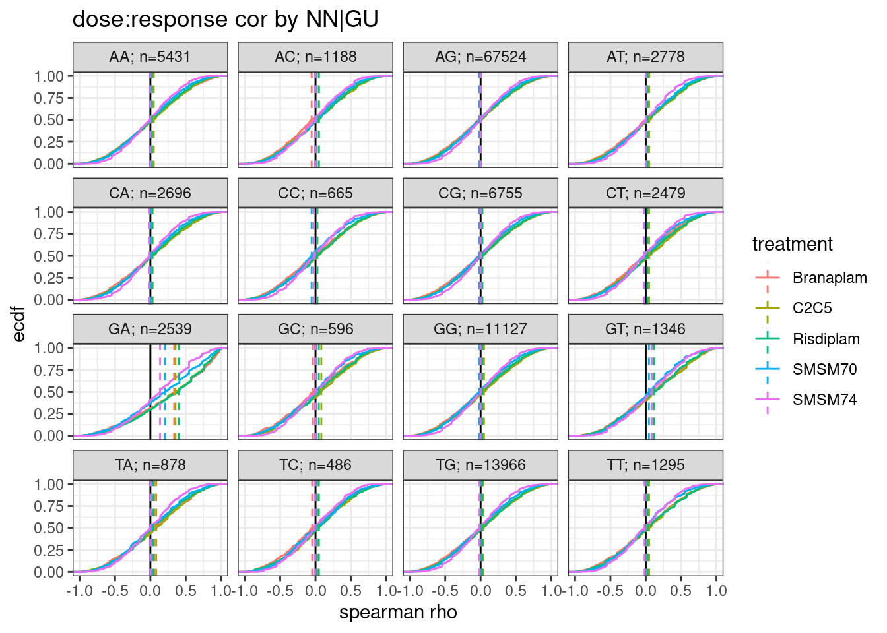
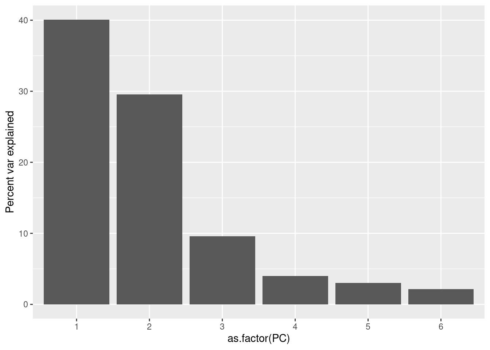
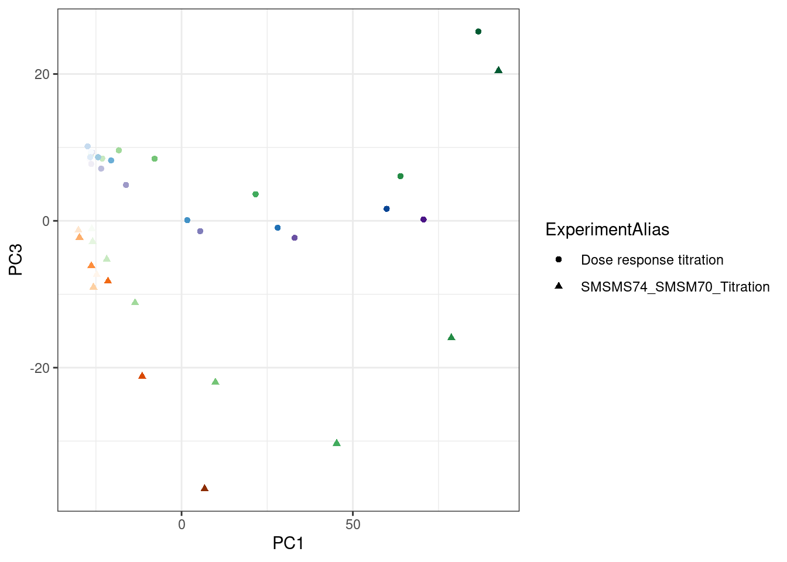

2023-12-14_CheckSMSM74
2023-12-14
Last updated: 2024-01-08
Checks: 6 1
Knit directory:
sm_splicingmodulators/analysis/
This reproducible R Markdown analysis was created with workflowr (version 1.7.0). The Checks tab describes the reproducibility checks that were applied when the results were created. The Past versions tab lists the development history.
The R Markdown file has unstaged changes. To know which version of
the R Markdown file created these results, you’ll want to first commit
it to the Git repo. If you’re still working on the analysis, you can
ignore this warning. When you’re finished, you can run
wflow_publish to commit the R Markdown file and build the
HTML.
Great job! The global environment was empty. Objects defined in the global environment can affect the analysis in your R Markdown file in unknown ways. For reproduciblity it’s best to always run the code in an empty environment.
The command set.seed(19900924) was run prior to running
the code in the R Markdown file. Setting a seed ensures that any results
that rely on randomness, e.g. subsampling or permutations, are
reproducible.
Great job! Recording the operating system, R version, and package versions is critical for reproducibility.
Nice! There were no cached chunks for this analysis, so you can be confident that you successfully produced the results during this run.
Great job! Using relative paths to the files within your workflowr project makes it easier to run your code on other machines.
Great! You are using Git for version control. Tracking code development and connecting the code version to the results is critical for reproducibility.
The results in this page were generated with repository version 4794d47. See the Past versions tab to see a history of the changes made to the R Markdown and HTML files.
Note that you need to be careful to ensure that all relevant files for
the analysis have been committed to Git prior to generating the results
(you can use wflow_publish or
wflow_git_commit). workflowr only checks the R Markdown
file, but you know if there are other scripts or data files that it
depends on. Below is the status of the Git repository when the results
were generated:
Ignored files:
Ignored: .Rhistory
Ignored: .Rproj.user/
Ignored: code/.snakemake/
Ignored: code/PlotTitrationstracks.xml
Ignored: code/QC/
Ignored: code/Session.vim
Ignored: code/SplicingAnalysis/
Ignored: code/logs/
Ignored: code/rna-seq/
Ignored: code/scratch/
Ignored: code/scripts/.snakemake
Ignored: code/scripts/BamToBigwig.sh
Ignored: code/scripts/CalcSpearmanForSplicing.R
Ignored: code/scripts/CatIdxStats.R
Ignored: code/scripts/Collapse_Juncsfiles.R
Ignored: code/scripts/leafcutter
Ignored: code/scripts/leafcutter_to_PSI.R
Unstaged changes:
Modified: analysis/2023-12-14-CheckSMSM74.Rmd
Modified: code/module_workflows/snakemake-workflow_rna-seq
Modified: output/QC/ReadCountsPerSamples.tsv
Staged changes:
Modified: code/module_workflows/snakemake-workflow_rna-seq
Note that any generated files, e.g. HTML, png, CSS, etc., are not included in this status report because it is ok for generated content to have uncommitted changes.
These are the previous versions of the repository in which changes were
made to the R Markdown
(analysis/2023-12-14-CheckSMSM74.Rmd) and HTML
(docs/2023-12-14-CheckSMSM74.html) files. If you’ve
configured a remote Git repository (see ?wflow_git_remote),
click on the hyperlinks in the table below to view the files as they
were in that past version.
| File | Version | Author | Date | Message |
|---|---|---|---|---|
| Rmd | 4794d47 | Benjmain Fair | 2023-12-21 | added workflow |
Intro
load libraries, read in data
library(tidyverse)
library(data.table)
library(edgeR)
library(biomaRt)
library(drc)
junctable <- fread("../code/rna-seq/SplicingAnalysis/leafcutter/GRCh38_GencodeRelease44Comprehensive/juncTableBeds/PSI.sorted.bed.gz")
juncinfo <- fread("../code/SplicingAnalysis/AnnotatedJuncs.tsv.gz")tidy data, calculate dose response spearman coef for each junc
junc.longtable <- junctable %>%
dplyr::select(c(4,6), contains("X6"), contains("X2")) %>%
separate(junc, into=c("chrom", "start", "stop", "cluster"), sep=":", convert=T) %>%
mutate(juncname = paste(chrom, start, stop, strand,sep="_")) %>%
gather("sample", "PSI", contains("X6"), contains("X2")) %>%
inner_join(juncinfo %>%
dplyr::select(juncname, DonorSeq, known_donor, known_acceptor, known_junction, gene_names, gene_ids)) %>%
separate(sample, into=c("Experiment", "cell.line", "libType", "treatment", "dose.nM", "rep", convert=T), sep="_") %>%
mutate(dose.nM = as.numeric(dose.nM))
cor.coefs <- junc.longtable %>%
mutate(dose.nM = as.numeric(dose.nM)) %>%
group_by(treatment, juncname) %>%
summarize(rho = cor(PSI, dose.nM, method='s')) %>%
ungroup()
junc.longtable <- junc.longtable %>%
mutate(dose.nM = as.numeric(dose.nM)) %>%
inner_join(cor.coefs)
junc.longtable %>%
distinct(juncname, treatment, .keep_all=T) %>%
filter(!is.na(rho)) %>%
mutate(NNGU = substr(DonorSeq, 3,4)) %>%
group_by(treatment, NNGU) %>%
mutate(n = n()) %>%
ungroup() %>%
group_by(NNGU) %>%
mutate(avg_n = trunc(mean(n))) %>%
ungroup() %>%
mutate(group = str_glue("{NNGU}; n={avg_n}")) %>%
ggplot(aes(x=rho, color=treatment)) +
geom_vline(xintercept = 0) +
stat_ecdf() +
geom_vline(data = . %>%
group_by(treatment, group) %>%
summarise(median = median(rho)) %>%
ungroup(),
aes(xintercept=median, color=treatment),
linetype='dashed') +
facet_wrap(~group) +
theme_bw() +
labs(title="dose:response cor by NN|GU",y="ecdf", x="spearman rho")
junc.longtable %>%
distinct(juncname, treatment, .keep_all=T) %>%
filter(!is.na(rho)) %>%
mutate(NNGU = substr(DonorSeq, 3,4)) %>%
group_by(treatment, NNGU) %>%
mutate(n = n()) %>%
ungroup() %>%
group_by(NNGU) %>%
mutate(avg_n = trunc(mean(n))) %>%
ungroup() %>%
mutate(group = str_glue("{NNGU}; n={avg_n}")) %>%
ggplot(aes(x=rho, color=treatment)) +
geom_vline(xintercept = 0) +
stat_ecdf() +
geom_vline(data = . %>%
group_by(treatment, group) %>%
summarise(median = median(rho)) %>%
ungroup(),
aes(xintercept=median, color=treatment),
linetype='dashed') +
facet_wrap(~group) +
theme_bw() +
labs(title="dose:response cor by NN|GU",y="ecdf", x="spearman rho") +
coord_cartesian(xlim=c(-0.5, 0.5))Hmm.. surprisingly, SMSM74 does not seem to activate GU|GU genome wide like I might have expected. Let’s subset just the GU|GU splice sites that most resemble the SMN2 minigene (AAGA|GUAAGTC)
First let’s look at the -4, -3 position, of all GU|GU
junc.longtable %>%
distinct(juncname, treatment, .keep_all=T) %>%
filter(!is.na(rho)) %>%
mutate(NNGU = substr(DonorSeq, 3,4)) %>%
filter(NNGU == "GT") %>%
mutate(NNGUGU = substr(DonorSeq, 1,2)) %>%
group_by(treatment, NNGUGU) %>%
mutate(n = n()) %>%
ungroup() %>%
group_by(NNGUGU) %>%
mutate(avg_n = trunc(mean(n))) %>%
ungroup() %>%
mutate(group = str_glue("{NNGUGU}; n={avg_n}")) %>%
ggplot(aes(x=rho, color=treatment)) +
geom_vline(xintercept = 0) +
stat_ecdf() +
geom_vline(data = . %>%
group_by(treatment, group) %>%
summarise(median = median(rho)) %>%
ungroup(),
aes(xintercept=median, color=treatment),
linetype='dashed') +
facet_wrap(~group) +
theme_bw() +
labs(title="dose:response cor by NNGU|GU",y="ecdf", x="spearman rho")Let’s check STAT1 effect
junc.longtable %>%
distinct(juncname, treatment, .keep_all=T) %>%
filter(!is.na(rho)) %>%
mutate(NNGU = substr(DonorSeq, 3,4)) %>%
filter(NNGU == "GA") %>%
filter(gene_names=="STAT1") chrom start stop cluster strand juncname
1 chr2 190977025 190978528 clu_26478_- - chr2_190977025_190978528_-
2 chr2 190977025 190978528 clu_26478_- - chr2_190977025_190978528_-
3 chr2 190977025 190978528 clu_26478_- - chr2_190977025_190978528_-
4 chr2 190977025 190978528 clu_26478_- - chr2_190977025_190978528_-
5 chr2 190977025 190978528 clu_26478_- - chr2_190977025_190978528_-
Experiment cell.line libType treatment dose.nM rep TRUE PSI DonorSeq
1 X6 LCL polyA SMSM70 100 1 <NA> 10.787200 AGGAGTAAGCA
2 X6 LCL polyA SMSM74 100 1 <NA> 0.230947 AGGAGTAAGCA
3 X2 LCL polyA Branaplam 3160 1 <NA> 54.228900 AGGAGTAAGCA
4 X2 LCL polyA C2C5 1000 1 <NA> 58.474600 AGGAGTAAGCA
5 X2 LCL polyA Risdiplam 10000 1 <NA> 51.669600 AGGAGTAAGCA
known_donor known_acceptor known_junction gene_names gene_ids
1 0 1 0 STAT1 ENSG00000115415.21
2 0 1 0 STAT1 ENSG00000115415.21
3 0 1 0 STAT1 ENSG00000115415.21
4 0 1 0 STAT1 ENSG00000115415.21
5 0 1 0 STAT1 ENSG00000115415.21
rho NNGU
1 0.9958246 GA
2 0.9574271 GA
3 1.0000000 GA
4 1.0000000 GA
5 1.0000000 GAjunc.longtable %>%
distinct(treatment, dose.nM) treatment dose.nM
1 SMSM70 1.00e+02
2 SMSM70 1.00e+01
3 SMSM70 1.00e+00
4 SMSM70 1.00e+03
5 SMSM70 3.16e+01
6 SMSM70 3.16e+00
7 SMSM70 3.16e+02
8 SMSM70 3.16e+03
9 SMSM74 1.00e+02
10 SMSM74 1.00e+01
11 SMSM74 1.00e+04
12 SMSM74 1.00e+03
13 SMSM74 3.16e+02
14 SMSM74 3.16e+00
15 SMSM74 3.16e+01
16 SMSM74 3.16e+03
17 SMSM70 0.00e+00
18 SMSM74 0.00e+00
19 Branaplam 3.16e+03
20 Branaplam 1.00e+03
21 Branaplam 3.16e+02
22 Branaplam 1.00e+02
23 Branaplam 3.16e+01
24 Branaplam 1.00e+01
25 Branaplam 3.16e+00
26 Branaplam 1.00e+00
27 C2C5 1.00e+03
28 C2C5 3.16e+02
29 C2C5 1.00e+02
30 C2C5 3.16e+01
31 C2C5 1.00e+01
32 C2C5 3.16e+00
33 C2C5 1.00e+00
34 C2C5 3.16e-01
35 DMSO NA
36 Risdiplam 1.00e+04
37 Risdiplam 3.16e+03
38 Risdiplam 1.00e+03
39 Risdiplam 3.16e+02
40 Risdiplam 1.00e+02
41 Risdiplam 3.16e+01
42 Risdiplam 1.00e+01
43 Risdiplam 3.16e+00junc.longtable %>%
filter(juncname == "chr2_190977025_190978528_-") %>%
group_by(treatment) %>%
mutate(doseRank = dense_rank(dose.nM)) %>%
ungroup() %>%
filter(!(treatment %in% c("SMSM70", "SMSM74") & doseRank == 1)) %>%
group_by(treatment) %>%
mutate(doseRank = dense_rank(dose.nM)) %>%
ungroup() %>%
ggplot(aes(x=doseRank, y=PSI, color=treatment)) +
geom_line()Ok first let’s correct the treatment for DMSO samples in the new experiment metadata columns
junc.longtable %>%
distinct(Experiment, treatment, dose.nM) %>%
arrange(Experiment, treatment, dose.nM) Experiment treatment dose.nM
1 X2 Branaplam 1.00e+00
2 X2 Branaplam 3.16e+00
3 X2 Branaplam 1.00e+01
4 X2 Branaplam 3.16e+01
5 X2 Branaplam 1.00e+02
6 X2 Branaplam 3.16e+02
7 X2 Branaplam 1.00e+03
8 X2 Branaplam 3.16e+03
9 X2 C2C5 3.16e-01
10 X2 C2C5 1.00e+00
11 X2 C2C5 3.16e+00
12 X2 C2C5 1.00e+01
13 X2 C2C5 3.16e+01
14 X2 C2C5 1.00e+02
15 X2 C2C5 3.16e+02
16 X2 C2C5 1.00e+03
17 X2 DMSO NA
18 X2 Risdiplam 3.16e+00
19 X2 Risdiplam 1.00e+01
20 X2 Risdiplam 3.16e+01
21 X2 Risdiplam 1.00e+02
22 X2 Risdiplam 3.16e+02
23 X2 Risdiplam 1.00e+03
24 X2 Risdiplam 3.16e+03
25 X2 Risdiplam 1.00e+04
26 X6 SMSM70 0.00e+00
27 X6 SMSM70 1.00e+00
28 X6 SMSM70 3.16e+00
29 X6 SMSM70 1.00e+01
30 X6 SMSM70 3.16e+01
31 X6 SMSM70 1.00e+02
32 X6 SMSM70 3.16e+02
33 X6 SMSM70 1.00e+03
34 X6 SMSM70 3.16e+03
35 X6 SMSM74 0.00e+00
36 X6 SMSM74 3.16e+00
37 X6 SMSM74 1.00e+01
38 X6 SMSM74 3.16e+01
39 X6 SMSM74 1.00e+02
40 X6 SMSM74 3.16e+02
41 X6 SMSM74 1.00e+03
42 X6 SMSM74 3.16e+03
43 X6 SMSM74 1.00e+04junc.longtable <- junc.longtable %>%
mutate(treatment = case_when(
treatment %in% c("SMSM70", "SMSM74") & dose.nM == 0 ~ "DMSO",
TRUE ~ treatment
)) %>%
mutate(dose.nM = case_when(
treatment == "DMSO" ~ NA_real_,
TRUE ~ dose.nM
))
## Check by remaking stat1 plot
junc.longtable %>%
filter(juncname == "chr2_190977025_190978528_-") %>%
group_by(treatment) %>%
mutate(doseRank = dense_rank(dose.nM)) %>%
ggplot(aes(x=doseRank, y=PSI, color=treatment)) +
geom_line()
Ok, now let’s make a median logFC dose response plot by junc type
junc.longtable <- junc.longtable %>%
mutate(NNGU = substr(DonorSeq, 3,4))
Median.DMSO.PSI <- junc.longtable %>%
filter(treatment == "DMSO") %>%
group_by(juncname, Experiment) %>%
summarise(DMSO.medianPSI = median(PSI, na.rm=T)) %>%
ungroup() %>%
filter(!is.na(DMSO.medianPSI))
junc.longtable %>%
filter(!treatment == "DMSO") %>%
inner_join(Median.DMSO.PSI) %>%
mutate(PSI.FC = PSI/DMSO.medianPSI) %>%
# mutate(PSI.FC = PSI-DMSO.medianPSI) %>%
filter(is.finite(PSI.FC)) %>%
group_by(treatment) %>%
mutate(doseRank = dense_rank(dose.nM)) %>%
group_by(NNGU, treatment, doseRank) %>%
summarise(Mean = mean(PSI.FC)) %>%
mutate(NNGU.BroadClass = case_when(
NNGU == "GA" ~ "GA|GU",
NNGU == "GT" ~ "GU|GU",
NNGU == "AG" ~ "AG|GU",
TRUE ~ "All others"
)) %>%
ggplot(aes(x=doseRank, y=Mean, color=NNGU, group=NNGU)) +
geom_line() +
# scale_color_manual(values=c("GA|GU"="blue", "GU|GU"="red", "AG|GU"="black","All others"="gray"), name="Type of 5'ss") +
facet_wrap(~treatment) +
theme_bw() +
labs(y="Mean FoldChange(PSI)", x="dose rank")junc.longtable %>%
filter(!treatment == "DMSO") %>%
inner_join(Median.DMSO.PSI) %>%
# mutate(PSI.FC = PSI/DMSO.medianPSI) %>%
mutate(PSI.FC = PSI-DMSO.medianPSI) %>%
filter(is.finite(PSI.FC)) %>%
group_by(treatment) %>%
mutate(doseRank = dense_rank(dose.nM)) %>%
group_by(NNGU, treatment, doseRank) %>%
summarise(Mean = mean(PSI.FC)) %>%
mutate(NNGU.BroadClass = case_when(
NNGU == "GA" ~ "GA|GU",
NNGU == "GT" ~ "GU|GU",
NNGU == "AG" ~ "AG|GU",
TRUE ~ "All others"
)) %>%
ggplot(aes(x=doseRank, y=Mean, color=NNGU, group=NNGU)) +
geom_line() +
# scale_color_manual(values=c("GA|GU"="blue", "GU|GU"="red", "AG|GU"="black","All others"="gray"), name="Type of 5'ss") +
facet_wrap(~treatment) +
theme_bw() +
labs(y="Mean DeltaPSI", x="dose rank")I think these SMSM70 and SMSM74 experiments are just noisier in general… maybe there is a big difference in read depth… let’s check.
Metadata <- read_tsv("../code/config/samples.tsv") %>%
distinct(sample, .keep_all = T)
ReadCounts <- read_tsv("../output/QC/ReadCountsPerSamples.tsv", col_names = c("fn", "counts")) %>%
mutate(sample = str_replace(fn, "rna-seq/idxstats/(.+?).txt", "\\1")) %>%
inner_join(Metadata)
ReadCounts %>%
arrange(Experiment, Treatment, dose.nM) %>%
mutate(rn = row_number()) %>%
mutate(sample = as.factor(rn)) %>%
ggplot(aes(x=sample, y=counts/1E6, fill=color)) +
geom_col() +
scale_fill_identity() +
coord_cartesian(ylim=c(0,300)) +
facet_wrap(~ExperimentAlias, scales = "free_x") +
theme_bw() +
theme(
axis.text.x=element_blank(),
axis.ticks.x=element_blank()) +
labs(title = "Read counts per experiment", y="Millions of mapped reads")Ok so these SMSM74/SMSM70 titration series were sequenced a bit shallower than previous data, which may explain the noise.
Let’s look at gene expression now… I hope that SMSM74 has some unique DE genes that SMSM70 does not. Of course DE analysis is kind of complicated with this experimental set up… For starters, let’s plot all these titration series in PCA.
ExpressionTable <- read_tsv("../code/rna-seq/featureCounts/GRCh38_GencodeRelease44Comprehensive/RF.Counts.txt", comment="#") %>%
rename_with(~str_replace(.x, "rna-seq/Alignments/STAR_Align/(.+?)/Aligned.sortedByCoord.out.bam", "\\1"), contains(".bam")) %>%
mutate(ensembl_gene_id = str_replace(Geneid, "^(.+?)\\..+?$", "\\1"))
ensembl = useMart(biomart="ensembl", dataset="hsapiens_gene_ensembl")
results <- getBM(attributes=c("ensembl_gene_id","hgnc_symbol","transcript_biotype"),filters = c("transcript_biotype"), values=list("protein_coding"), mart=ensembl)
Count.table <- ExpressionTable %>%
inner_join(results) %>%
dplyr::select(ensembl_gene_id, hgnc_symbol, starts_with("2"), starts_with("6")) %>%
unite(Geneid, ensembl_gene_id, hgnc_symbol) %>%
column_to_rownames("Geneid") %>%
DGEList() %>%
calcNormFactors()
Max.CPM <- Count.table %>%
cpm(prior.count=0.1, log=T) %>%
apply(1, max)
hist(Max.CPM)CPM.filtered <- Count.table[Max.CPM > 2, ] %>%
calcNormFactors() %>%
cpm(prior.count=0.1, log=T)
CPM.filtered %>% dim()[1] 10948 45pca.results <- CPM.filtered %>%
scale() %>% t() %>% prcomp(scale=T) %>%
summary()
pca.results$importance %>% matrix(dim(.)) %>%
t() %>%
as.data.frame() %>%
mutate(PC=row_number()) %>%
filter(PC<=6) %>%
ggplot(aes(x=as.factor(PC), y=V2*100)) +
geom_col() +
labs(y="Percent var explained")
pca.results$x %>%
as.data.frame() %>%
rownames_to_column("sample") %>%
inner_join(Metadata) %>%
ggplot(aes(x=PC1, y=PC2, color=color)) +
geom_point(aes(shape=ExperimentAlias)) +
scale_color_identity() +
theme_bw()pca.results$x %>%
as.data.frame() %>%
rownames_to_column("sample") %>%
inner_join(Metadata) %>%
ggplot(aes(x=PC2, y=PC3, color=color)) +
geom_point(aes(shape=ExperimentAlias)) +
scale_color_identity() +
theme_bw()pca.results$x %>%
as.data.frame() %>%
rownames_to_column("sample") %>%
inner_join(Metadata) %>%
ggplot(aes(x=PC2, y=PC4, color=color)) +
geom_point(aes(shape=ExperimentAlias)) +
scale_color_identity() +
theme_bw()pca.results$x %>%
as.data.frame() %>%
rownames_to_column("sample") %>%
inner_join(Metadata) %>%
ggplot(aes(x=PC2, y=PC5, color=color)) +
geom_point(aes(shape=ExperimentAlias)) +
scale_color_identity() +
theme_bw()pca.results$x %>%
as.data.frame() %>%
rownames_to_column("sample") %>%
inner_join(Metadata) %>%
ggplot(aes(x=PC2, y=PC6, color=color)) +
geom_point(aes(shape=ExperimentAlias)) +
scale_color_identity() +
theme_bw()Ok, there is some a batch effect that is reflected in PC1… but later PCs might capture something unique about SMSM74…
Maybe I should plot effects relative to DMSO within batch and then redo the PCA…
CPM.filtered.long <- CPM.filtered %>%
as.data.frame() %>%
rownames_to_column("Geneid") %>%
pivot_longer(names_to="sample", values_to="log2CPM", -Geneid) %>%
inner_join(Metadata) %>%
dplyr::rename(treatment = Treatment) %>%
mutate(treatment = case_when(
treatment %in% c("SMSM70", "SMSM74") & dose.nM == 0 ~ "DMSO",
TRUE ~ treatment
)) %>%
mutate(dose.nM = case_when(
treatment == "DMSO" ~ NA_real_,
TRUE ~ dose.nM
))
CPM.DMSO <- CPM.filtered.long %>%
filter(treatment == "DMSO") %>%
group_by(Geneid, Experiment) %>%
summarise(DMSO.medianCPM = median(log2CPM, na.rm=T)) %>%
ungroup() %>%
filter(!is.na(DMSO.medianCPM))
log2FC.mat <- CPM.filtered.long %>%
filter(!treatment == "DMSO") %>%
inner_join(CPM.DMSO) %>%
mutate(Cpm.log2FC = log2CPM-DMSO.medianCPM) %>%
filter(is.finite(Cpm.log2FC)) %>%
dplyr::select(sample, Cpm.log2FC, Geneid) %>%
pivot_wider(names_from="sample", values_from="Cpm.log2FC")
pca.results <- log2FC.mat %>%
column_to_rownames("Geneid") %>%
# scale() %>%
t() %>%
prcomp(scale=F) %>%
summary()
pca.results$importance %>% matrix(dim(.)) %>%
t() %>%
as.data.frame() %>%
mutate(PC=row_number()) %>%
filter(PC<=6) %>%
ggplot(aes(x=as.factor(PC), y=V2*100)) +
geom_col() +
labs(y="Percent var explained")pca.results$x %>%
as.data.frame() %>%
rownames_to_column("sample") %>%
inner_join(Metadata) %>%
ggplot(aes(x=PC1, y=PC2, color=color)) +
geom_point(aes(shape=ExperimentAlias)) +
scale_color_identity() +
theme_bw()pca.results$x %>%
as.data.frame() %>%
rownames_to_column("sample") %>%
inner_join(Metadata) %>%
ggplot(aes(x=PC1, y=PC3, color=color)) +
geom_point(aes(shape=ExperimentAlias)) +
scale_color_identity() +
theme_bw()
pca.results$x %>%
as.data.frame() %>%
rownames_to_column("sample") %>%
inner_join(Metadata) %>%
ggplot(aes(x=PC1, y=PC4, color=color)) +
geom_point(aes(shape=ExperimentAlias)) +
scale_color_identity() +
theme_bw()pca.results$x %>%
as.data.frame() %>%
rownames_to_column("sample") %>%
inner_join(Metadata) %>%
ggplot(aes(x=PC1, y=PC5, color=color)) +
geom_point(aes(shape=ExperimentAlias)) +
scale_color_identity() +
theme_bw()pca.results$x %>%
as.data.frame() %>%
rownames_to_column("sample") %>%
inner_join(Metadata) %>%
ggplot(aes(x=PC1, y=PC6, color=color)) +
geom_point(aes(shape=ExperimentAlias)) +
scale_color_identity() +
theme_bw()Hmm. well that did sort of what is expected. a batch effect still lingers in later PC2 though. And I’m struggling to find a meaningful PC that really singles out SMSM74. Maybe PC6
Let’s look at the loadings for that PC, and check those top genes on IGV, and in dose-response plots, for believable effects that are specific to SMSM74…
GenesOfInterest <- pca.results$rotation %>%
as.data.frame() %>%
rownames_to_column("Geneid") %>%
dplyr::select(Geneid, PC6) %>% arrange(desc(abs(PC6))) %>% head(40)
GenesOfInterest Geneid PC6
1 ENSG00000137975_CLCA2 0.13058825
2 ENSG00000221890_NPTXR 0.12372967
3 ENSG00000154252_GAL3ST2 -0.11589259
4 ENSG00000140459_CYP11A1 0.10746337
5 ENSG00000101098_RIMS4 -0.10274007
6 ENSG00000148798_INA 0.10263430
7 ENSG00000007038_PRSS21 0.10017609
8 ENSG00000166428_PLD4 0.09257943
9 ENSG00000071282_LMCD1 0.08222524
10 ENSG00000111321_LTBR -0.07999613
11 ENSG00000164125_GASK1B -0.07813862
12 ENSG00000173156_RHOD 0.07788210
13 ENSG00000155016_CYP2U1 -0.07619222
14 ENSG00000109321_AREG 0.07334963
15 ENSG00000203805_PLPP4 -0.07164181
16 ENSG00000134202_GSTM3 -0.07162766
17 ENSG00000173253_DMRT2 -0.07026602
18 ENSG00000182175_RGMA -0.06893070
19 ENSG00000198865_CCDC152 -0.06859844
20 ENSG00000113263_ITK 0.06796957
21 ENSG00000175768_TOMM5 0.06786299
22 ENSG00000127578_WFIKKN1 -0.06769109
23 ENSG00000179820_MYADM -0.06316969
24 ENSG00000149084_HSD17B12 0.06243662
25 ENSG00000144712_CAND2 -0.06149096
26 ENSG00000151640_DPYSL4 -0.05727504
27 ENSG00000100557_CCDC198 0.05704705
28 ENSG00000022556_NLRP2 -0.05669793
29 ENSG00000072133_RPS6KA6 -0.05568656
30 ENSG00000168438_CDC40 0.05324489
31 ENSG00000114988_LMAN2L 0.05270010
32 ENSG00000175793_SFN 0.05197511
33 ENSG00000167601_AXL 0.05126084
34 ENSG00000165029_ABCA1 0.05035757
35 ENSG00000070182_SPTB 0.05035628
36 ENSG00000136367_ZFHX2 -0.04992230
37 ENSG00000070831_CDC42 -0.04963907
38 ENSG00000126970_ZC4H2 0.04906296
39 ENSG00000161896_IP6K3 -0.04805840
40 ENSG00000178662_CSRNP3 0.04715268CPM.filtered.long %>%
filter(Geneid %in% GenesOfInterest$Geneid) %>%
separate(Geneid, into=c("ensembl_id", "symbol"), remove=F) %>%
filter(!treatment == "DMSO") %>%
inner_join(CPM.DMSO) %>%
mutate(Cpm.log2FC = log2CPM-DMSO.medianCPM) %>%
group_by(treatment) %>%
mutate(doseRank = dense_rank(dose.nM)) %>%
ungroup() %>%
ggplot(aes(x=doseRank, y=Cpm.log2FC, color=treatment)) +
geom_line() +
facet_wrap(~symbol, scales = "free") +
theme_bw()Ok based on these, let’s plot some genes of interest now:
CPM.filtered.long %>%
separate(Geneid, into=c("ensembl_id", "symbol"), remove=F) %>%
filter(symbol %in% c("HTT", "STAT1", "MYB", "ABCA1", "HSD17B12", "HSD17B4","LMCD1", "LMAN2L", "CDC42", "CDC40", "NPEPPS", "TOMM5", "SEC22A", "ATG5", "LMNA")) %>%
filter(!treatment == "DMSO") %>%
inner_join(CPM.DMSO) %>%
mutate(Cpm.log2FC = log2CPM-DMSO.medianCPM) %>%
group_by(treatment) %>%
mutate(doseRank = dense_rank(dose.nM)) %>%
ungroup() %>%
ggplot(aes(x=doseRank, y=Cpm.log2FC, color=treatment)) +
geom_line() +
facet_wrap(~symbol, scales = "free") +
theme_bw()Ok, I think now I want to look at IGV to hopefully manually identify some of the causal splice juncs in some of these genes. Like CDC40 looks interesting..
To help my browsing, I want to use my scripts to color bigwig plots and plot as groups…
Metadata %>%
filter(Experiment %in% c(2,6)) %>%
mutate(filepath = str_glue("rna-seq/bigwigs/unstranded/{sample}.bw")) %>%
mutate(Group = case_when(
sample == "2_LCL_polyA_DMSO_NA_1" ~ "2_LCL_polyA_Risdiplam_0",
sample == "2_LCL_polyA_DMSO_NA_2" ~ "2_LCL_polyA_Branaplam_0",
sample == "2_LCL_polyA_DMSO_NA_3" ~ "2_LCL_polyA_C2C5_0",
TRUE ~ as.character(str_glue("{Experiment}_{cell.type}_{Treatment}_{dose.nM}")))) %>%
mutate(Strand = ".") %>%
dplyr::select(sample, filepath, Group, Strand) %>%
write_tsv("../code/scratch/bwList.tsv")
Metadata %>%
filter(Experiment %in% c(2,6)) %>%
mutate(filepath = str_glue("rna-seq/bigwigs/unstranded/{sample}.bw")) %>%
mutate(Group = case_when(
sample == "2_LCL_polyA_DMSO_NA_1" ~ "2_LCL_polyA_Risdiplam_0",
sample == "2_LCL_polyA_DMSO_NA_2" ~ "2_LCL_polyA_Branaplam_0",
sample == "2_LCL_polyA_DMSO_NA_3" ~ "2_LCL_polyA_C2C5_0",
TRUE ~ as.character(str_glue("{Experiment}_{cell.type}_{Treatment}_{dose.nM}")))) %>%
mutate(Strand = ".") %>%
distinct(Group, .keep_all=T) %>%
mutate(Supergroup = str_replace(Group, "^.+?_.+?_(.+?)_.+$", "\\1")) %>%
dplyr::select(Group, color, bed=Strand, Supergroup) %>%
write_tsv("../code/scratch/bw.Groups.tsv")Also, let’s do some quick searches find some of the causal juncs in the most interesting genes…
junc.longtable %>%
filter(NNGU %in% c("GA", "GT")) %>%
filter(gene_names %in% c("TOMM5", "LMCD1", "CDC40", "NPEPPS", "LMNA", "HTT", "STAT1")) %>%
filter(!treatment == "DMSO") %>%
inner_join(Median.DMSO.PSI) %>%
# mutate(PSI.FC = PSI/DMSO.medianPSI) %>%
mutate(PSI.FC = PSI-DMSO.medianPSI) %>%
filter(is.finite(PSI.FC)) %>%
mutate(group=str_glue("{gene_names}\n{juncname}\n{DonorSeq}")) %>%
group_by(juncname, treatment) %>%
mutate(doseRank = dense_rank(dose.nM)) %>%
ggplot(aes(x=doseRank, y=PSI, color=treatment)) +
geom_line() +
facet_wrap(~group, scales="free")…tinkering with drc::drm dose response modelling… Use ED
function to calculate ED_x, in where x is the response for which a dose
is estimated. x can be specified relative to the max effect (ie ED50),
or in absolute terms (same units as response).
ryegrass rootl conc
1 7.5800000 0.00
2 8.0000000 0.00
3 8.3285714 0.00
4 7.2500000 0.00
5 7.3750000 0.00
6 7.9625000 0.00
7 8.3555556 0.94
8 6.9142857 0.94
9 7.7500000 0.94
10 6.8714286 1.88
11 6.4500000 1.88
12 5.9222222 1.88
13 1.9250000 3.75
14 2.8857143 3.75
15 4.2333333 3.75
16 1.1875000 7.50
17 0.8571429 7.50
18 1.0571429 7.50
19 0.6875000 15.00
20 0.5250000 15.00
21 0.8250000 15.00
22 0.2500000 30.00
23 0.2200000 30.00
24 0.4400000 30.00ryegrass.m1 <- drm(rootl ~ conc, data = ryegrass,
fct = LL.4(names = c("Slope", "Lower Limit", "Upper Limit", "ED50")))
plot(ryegrass.m1)ED(ryegrass.m1, c(50, 99))
Estimated effective doses
Estimate Std. Error
e:1:50 3.05795 0.18573
e:1:99 14.27608 3.57468ED(ryegrass.m1, c(6, 4, 1), type='absolute')
Estimated effective doses
Estimate Std. Error
e:1:6 2.0975 0.1734
e:1:4 3.1359 0.1914
e:1:1 7.2454 1.0868Plans, fit expression models, 3 parameters (because lower limit set to 0)… then evluate ED_2x, since ED50 is hard to evaluate if the model fits have different upper limit.
sessionInfo()R version 4.2.0 (2022-04-22)
Platform: x86_64-pc-linux-gnu (64-bit)
Running under: CentOS Linux 7 (Core)
Matrix products: default
BLAS/LAPACK: /software/openblas-0.3.13-el7-x86_64/lib/libopenblas_haswellp-r0.3.13.so
locale:
[1] LC_CTYPE=en_US.UTF-8 LC_NUMERIC=C LC_TIME=C
[4] LC_COLLATE=C LC_MONETARY=C LC_MESSAGES=C
[7] LC_PAPER=C LC_NAME=C LC_ADDRESS=C
[10] LC_TELEPHONE=C LC_MEASUREMENT=C LC_IDENTIFICATION=C
attached base packages:
[1] stats graphics grDevices utils datasets methods base
other attached packages:
[1] drc_3.0-1 MASS_7.3-56 biomaRt_2.52.0 edgeR_3.38.4
[5] limma_3.52.4 data.table_1.14.2 forcats_0.5.1 stringr_1.4.0
[9] dplyr_1.0.9 purrr_0.3.4 readr_2.1.2 tidyr_1.2.0
[13] tibble_3.1.7 ggplot2_3.3.6 tidyverse_1.3.1
loaded via a namespace (and not attached):
[1] TH.data_1.1-1 colorspace_2.0-3 ellipsis_0.3.2
[4] rprojroot_2.0.3 XVector_0.36.0 fs_1.5.2
[7] rstudioapi_0.13 farver_2.1.0 bit64_4.0.5
[10] AnnotationDbi_1.58.0 fansi_1.0.3 mvtnorm_1.1-3
[13] lubridate_1.8.0 xml2_1.3.3 R.methodsS3_1.8.1
[16] codetools_0.2-18 splines_4.2.0 cachem_1.0.6
[19] knitr_1.39 jsonlite_1.8.0 workflowr_1.7.0
[22] broom_0.8.0 dbplyr_2.1.1 R.oo_1.24.0
[25] png_0.1-7 compiler_4.2.0 httr_1.4.3
[28] backports_1.4.1 assertthat_0.2.1 Matrix_1.5-3
[31] fastmap_1.1.0 cli_3.3.0 later_1.3.0
[34] htmltools_0.5.2 prettyunits_1.1.1 tools_4.2.0
[37] gtable_0.3.0 glue_1.6.2 GenomeInfoDbData_1.2.8
[40] rappdirs_0.3.3 Rcpp_1.0.8.3 carData_3.0-5
[43] Biobase_2.56.0 cellranger_1.1.0 jquerylib_0.1.4
[46] vctrs_0.4.1 Biostrings_2.64.0 xfun_0.30
[49] rvest_1.0.2 lifecycle_1.0.1 gtools_3.9.2
[52] XML_3.99-0.14 zlibbioc_1.42.0 zoo_1.8-10
[55] scales_1.2.0 vroom_1.5.7 hms_1.1.1
[58] promises_1.2.0.1 parallel_4.2.0 sandwich_3.0-1
[61] yaml_2.3.5 curl_4.3.2 memoise_2.0.1
[64] sass_0.4.1 stringi_1.7.6 RSQLite_2.2.14
[67] highr_0.9 S4Vectors_0.34.0 plotrix_3.8-2
[70] BiocGenerics_0.42.0 filelock_1.0.2 GenomeInfoDb_1.32.2
[73] rlang_1.0.2 pkgconfig_2.0.3 bitops_1.0-7
[76] evaluate_0.15 lattice_0.20-45 labeling_0.4.2
[79] bit_4.0.4 tidyselect_1.1.2 magrittr_2.0.3
[82] R6_2.5.1 IRanges_2.30.0 generics_0.1.2
[85] multcomp_1.4-19 DBI_1.1.2 pillar_1.7.0
[88] haven_2.5.0 whisker_0.4 withr_2.5.0
[91] survival_3.3-1 KEGGREST_1.36.2 abind_1.4-5
[94] RCurl_1.98-1.7 modelr_0.1.8 crayon_1.5.1
[97] car_3.1-1 utf8_1.2.2 BiocFileCache_2.4.0
[100] tzdb_0.3.0 rmarkdown_2.14 progress_1.2.2
[103] locfit_1.5-9.7 grid_4.2.0 readxl_1.4.0
[106] blob_1.2.3 git2r_0.30.1 reprex_2.0.1
[109] digest_0.6.29 httpuv_1.6.5 R.utils_2.11.0
[112] stats4_4.2.0 munsell_0.5.0 bslib_0.3.1